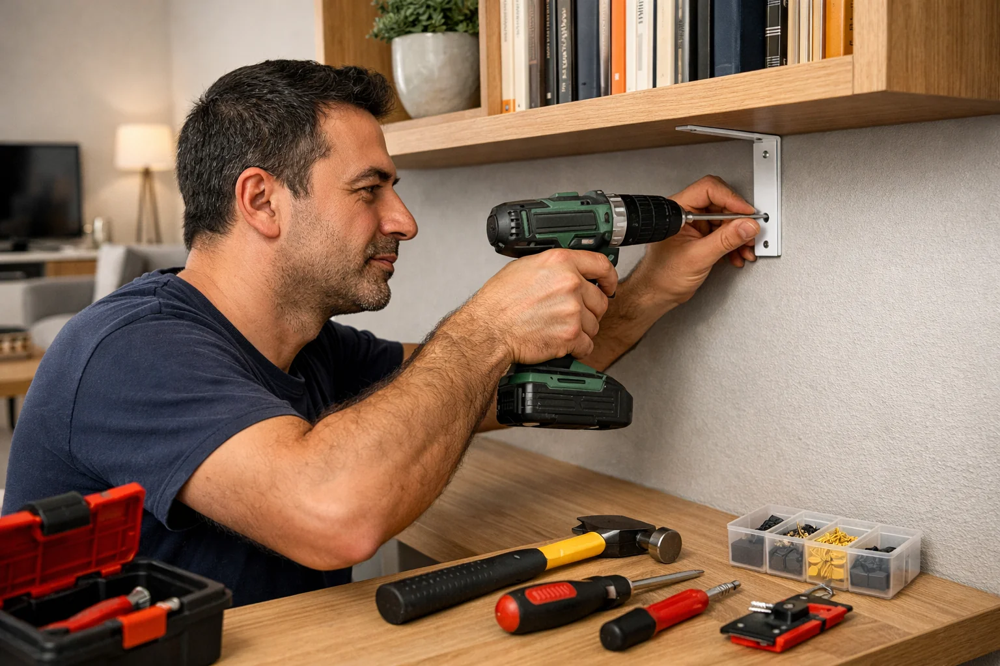
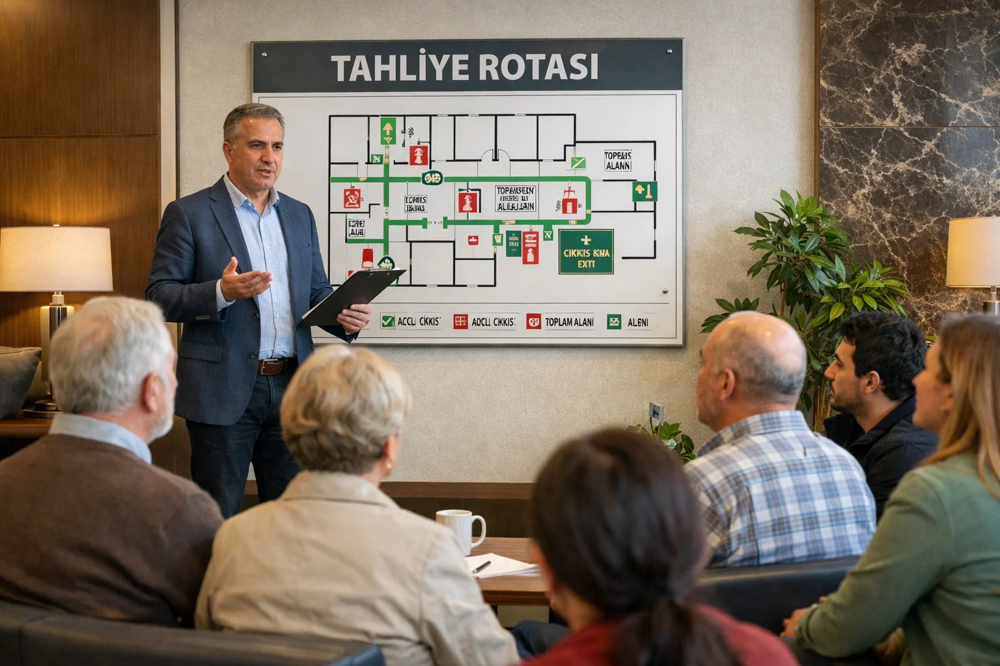
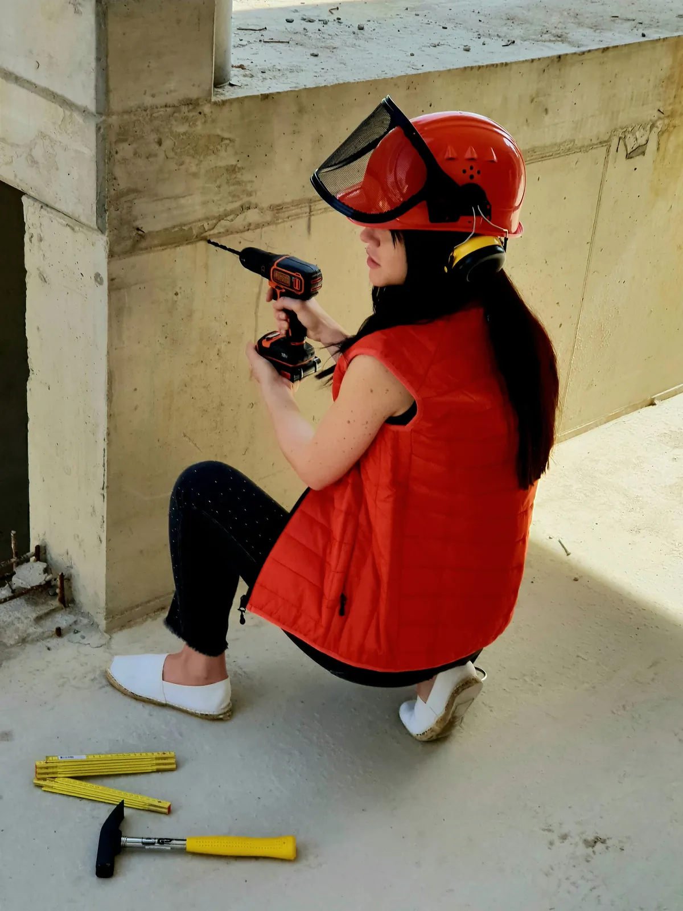
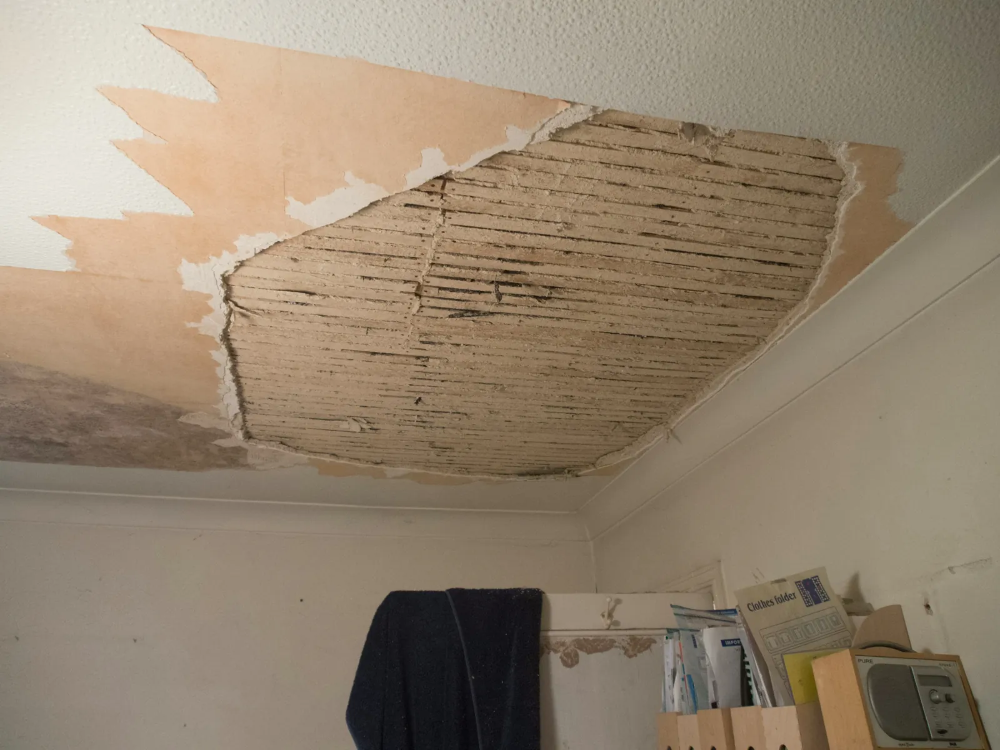
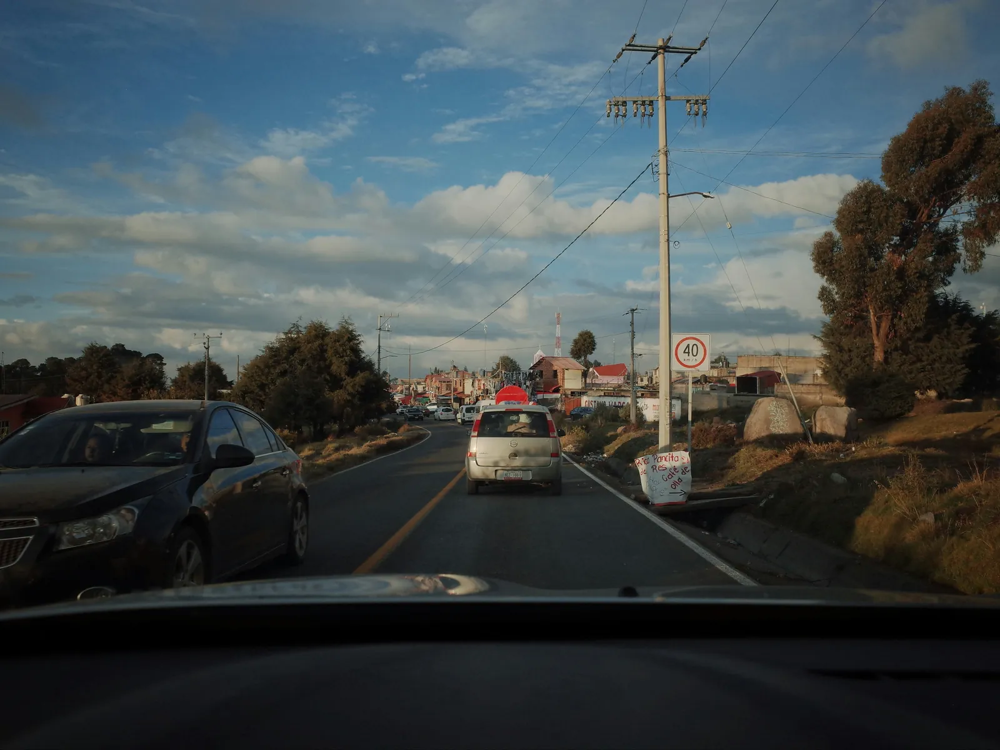
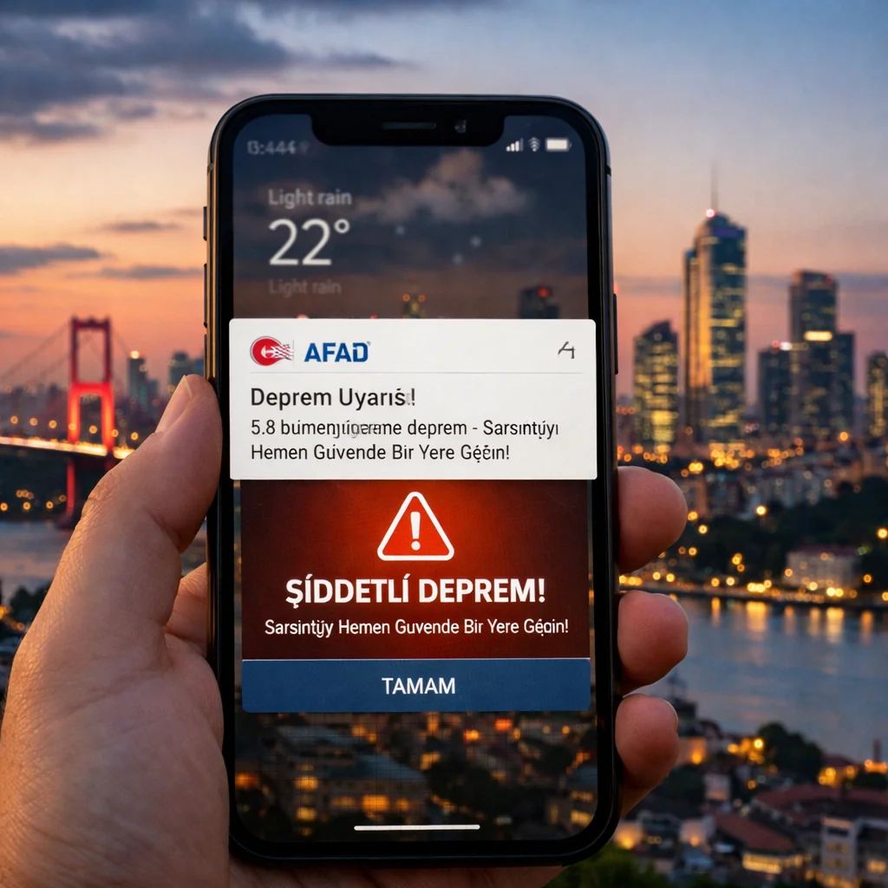
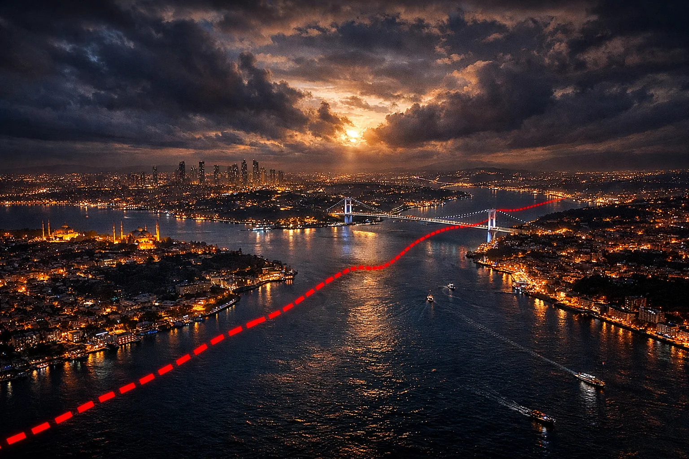
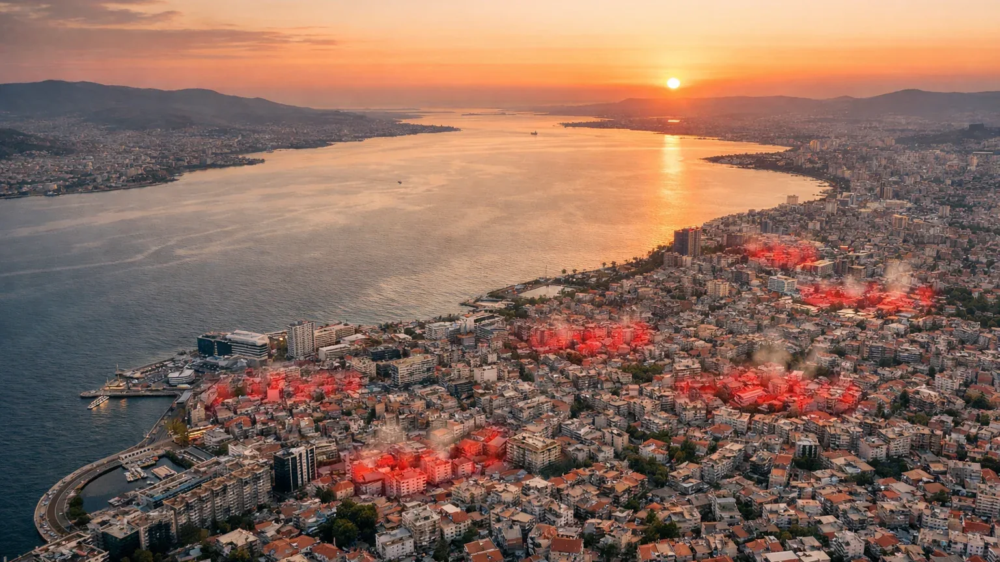

🎒 Hazırlık
Deprem öncesi evde, işyerinde ve ailece hazırlık rehberleri

Deprem Öncesi Hazırlık
Ev güvenliği, aile planı, acil iletişim ve tahliye rotası hazırlığı için kapsamlı rehber.

Deprem Çantası Listesi 2026
72 saatlik yaşam seti: su, gıda, belge, ilaç ve ekipman listesi. Güncel 2026 rehberi.

Mobilya Sabitleme
L-profil ile dolap, kitaplık, buzdolabı gibi ağır mobilyaları duvara sabitleme rehberi.

Apartman Yöneticileri
Kat malikleri, ortak alan tatbikatı ve site genelinde deprem hazırlığı için 10 adım.

Evcil Hayvanlarla
Kedi, köpek, kuş için deprem çantası, taşıma kafesi ve tahliye planı.

Engelli Bireyler
Tekerlekli sandalye, görme/işitme engelli, hareket kısıtlı bireyler için özel rehber.
Yaşlılar İçin
65 yaş üstü bireyler için ilaç yönetimi, evde güvenli düzenleme ve aile iletişimi.

Kadınlar İçin
Hamile, emzikli anne, bekar kadın ve özel ihtiyaçlar için deprem rehberi.

İşyeri Tatbikatı
6331 sayılı kanun gereği zorunlu işyeri deprem tatbikatı nasıl yapılır?
İlk Yardım Çantası
İlk yardım çantasında olması gereken temel malzemeler ve kullanım rehberi.
⚡ Deprem Anında
Sarsıntı süresince hayat kurtaran davranış rehberleri

Çök-Kapan-Tutun
Deprem anında uygulanması gereken hayat kurtaran üç adım. Adım adım rehber.

Güvenlik Bilgileri
Deprem sırasında ve sonrasında güvenlik önlemleri ve yaygın hatalar.

Bina İçindeyseniz
Ev, ofis veya okulda deprem başladığında çök-kapan-tutun uygulaması.

Dışarıdaysanız
Sokak, park, açık alanda deprem anında güvenli pozisyon ve önlemler.

Araç Kullanırken
Deprem sırasında araçtaysanız güvenli durma ve köprü/tünel kaçınma rehberi.
Çocuklara Deprem
3-5, 6-9, 10-14 yaş gruplarına göre deprem konusunu korkutmadan anlatma.
🆘 Deprem Sonrası
Sarsıntı sonrası ilk saatler ve uzun vadeli iyileşme

İlk 24 Saat
Deprem sonrası en kritik 24 saatte yapılması gerekenler. Adım adım eylem planı.

Psikolojik Destek & PTSD
Deprem sonrası travma, yetişkin ve çocuklarda PTSD ve destek önerileri.

Cep Telefonu İletişimi
Deprem sonrası SMS vs arama, baz istasyonu ve batarya ekonomisi.

Toplanma Alanı Sorgulama
Mahalle toplanma alanını e-Devlet'ten nasıl sorgularsınız?
🧪 Bilim ve Teknik
Deprem bilimi, fay hatları, yönetmelikler ve yapı güvenliği

Türkiye Deprem Rehberi
Kapsamlı: KAF, DAF ve tarihsel büyük depremler. Bilmeniz gereken sismolojik gerçekler.
ÖNERİLEN
Fay Hatları Haritası 2026
KAF, DAF, BAF: Türkiye'nin üç büyük fay hattı nerede? Bilimsel veriler.

Deprem Risk Haritası
Türkiye'nin deprem risk bölgeleri ve güvenli alanlar rehberi.

Büyüklük Ölçekleri
Richter, Moment (Mw) ve MMI şiddet ölçeği farkları ve hasar tahminleri.

Artçı Deprem Nedir?
Ana depremden sonra gelen artçıların süresi, büyüklüğü ve güvenlik önerileri.

Erken Uyarı Sistemi
Deprem erken uyarı sistemleri: AFAD, JMA ve ShakeAlert karşılaştırması.
TBDY 2019 Yönetmeliği
Türkiye Bina Deprem Yönetmeliği 2019 getirdikleri: performans tasarımı.

Yapı Denetim Raporu
Binanızın denetim raporu hangi bölümleri içerir? Beton, donatı kontrolü.
Evim Depreme Dayanıklı mı?
7 adımlık pratik test: yapım yılı, kolon-duvar analizi.
🏙 Şehir ve Tarih
Tarihsel depremler, şehir risk analizleri ve bölgesel rehberler

İstanbul Beklenen Deprem
Marmara fay segmenti ve %64 olasılık: bilim insanlarının tahminleri.

İstanbul İlçe Haritası
39 İstanbul ilçesinin detaylı risk haritası. Zemin + yapı analizi.

İzmir Deprem Tarihi
2020 Samos-İzmir, 1928 İzmir ve tarihi Ege sarsıntıları.

1999 Marmara Depremi
17 Ağustos Gölcük depremi sonrası Türkiye'de değişen 10 şey.

Kahramanmaraş 6 Şubat
2023 Pazarcık ve Elbistan depremlerinin yarattığı yıkım ve dersler.

Van Depremi 2011
23 Ekim Van-Erciş Mw 7.2 depremi ve Bayram Oteli hatırası.
📰 Sigorta & Haberler
DASK, konut sigortası ve son dakika deprem bilgileri